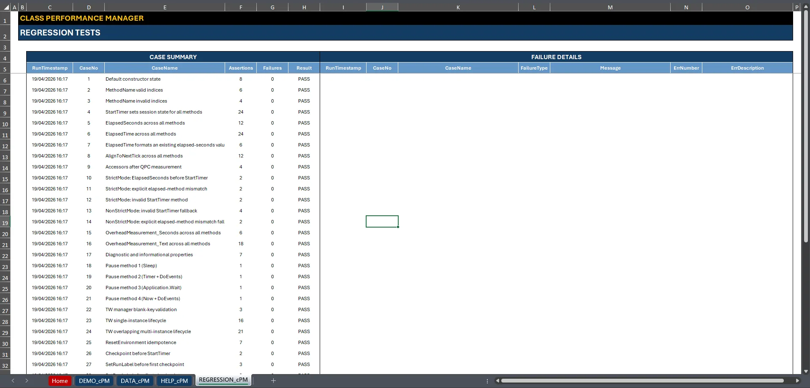

Measure VBA.
Trust the number.
VBA Performance Manager is a reusable timing, benchmarking and execution-control component for Microsoft Excel VBA on Windows.
Time code on a session-bound, high-resolution clock, keep every sample of a benchmark, and switch expensive Excel settings off and back on safely.
Release 1.4.0 · Windows desktop Excel · Certified on 64-bit Microsoft 365 Excel
The runtime is two source files you import. The workbook is an optional demo: check its SHA-256 against the release notes before you open it.
Time it. Benchmark it. Explain it.
Inline Timer() calls leave clock choice, rollover, failures, repetition and Excel cleanup to the caller. One class, cPerformanceManager, takes those over behind a small public surface.
- 01
Time a block
Start a session on the clock you choose, read elapsed seconds, and format them for people. A failed read is reported, never silently returned as a duration.
- 02
Benchmark a procedure
Run a
Public Subwith warm-ups and repetitions, get back every retained sample, and subtract a baseline measured on the same dispatch path. - 03
Instrument a workflow
Add named checkpoints with delta and cumulative times, export them as an array or text, and suspend screen updating, events or calculation while the work runs.
Six clocks.
Explicit boundaries.
Select a backend with the first argument to StartTimer. Each one documents the boundary that matters when you read its result.
- 1
- VBA
Timer: wall-clock seconds since midnight. - 2
GetTickCount/GetTickCount64: monotonic uptime counter.- 3
timeGetTime: multimedia timer; requests 1 ms resolution while held.- 4
timeGetSystemTime: multimedia time with a validated return format.- 5
QueryPerformanceCounter: high-resolution and monotonic. The default.- 6
Now() * 86400: wall clock, for diagnostics and compatibility.
Keep every sample.
- Full vectors: repeated measurement returns every retained run, not just an average. Failed reads and samples taken on a fallback backend are counted and excluded.
- Matched baselines: an empty procedure measured through the same
Application.Runpath gives an overhead that can legitimately be subtracted. - Distribution-aware statistics: median, minimum and maximum, mean, percentiles, standard deviation and coefficient of variation, with a contamination warning for noisy runs.
- Strict by default: an invalid measurement raises; the non-strict mode falls back with an explicit read status.
Know what has been verified.
Every change passes a static gate before it merges. Each release is certified by running the regression suite in real Excel, at the exact tagged source.
- Release 1.4.0: 80 regression cases, 643 assertions, 0 failures, on Microsoft 365 Excel 64-bit (Version 2607), at the exact tag.
- 32-bit Office: the source keeps its 32-bit branches, but no 32-bit host has been execution-certified yet.
- Static gate: source consistency, compile safety, pinned workflow actions and release claims are checked on every push and pull request.
- Provenance: each release lists the SHA-256 of its source files and assets, and the source files are compared with the tag.

Import. Measure. Review.
Import M_cPM_TIMEWASTERS.bas, then cPerformanceManager.cls, and compile. Test, demo and example modules are optional. Start with the installation guide, then the README and the wiki. Questions, defects and ideas go to the issue tracker; vulnerabilities go through the private route in the security policy.
What should I know before using VBA Performance Manager?
Use Windows desktop Excel and follow your organization's macro policy. The component is not a compiled profiler and does not claim nanosecond resolution: inspect the QPC frequency on your own host. MeasureProcedure runs the procedure name it is given through Application.Run, so pass only names your code controls. Calculation control needs a stable set of open workbooks while it is suspended. Further boundaries are listed in the README's known limitations.